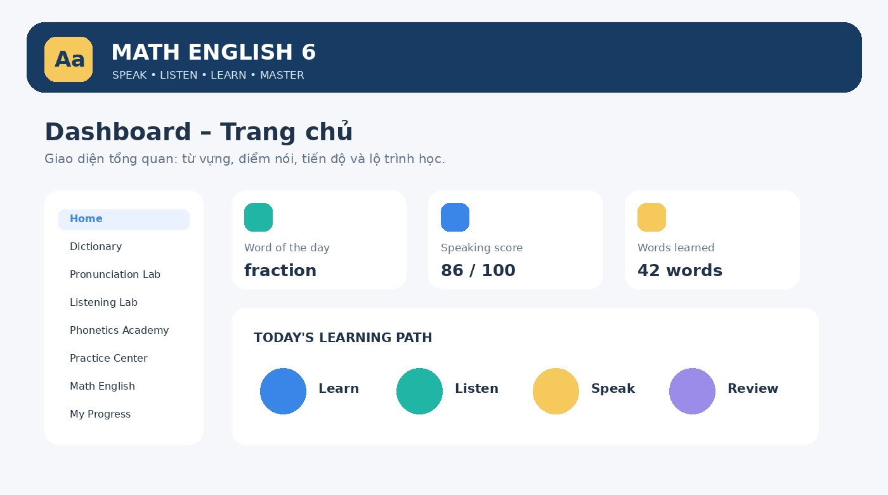
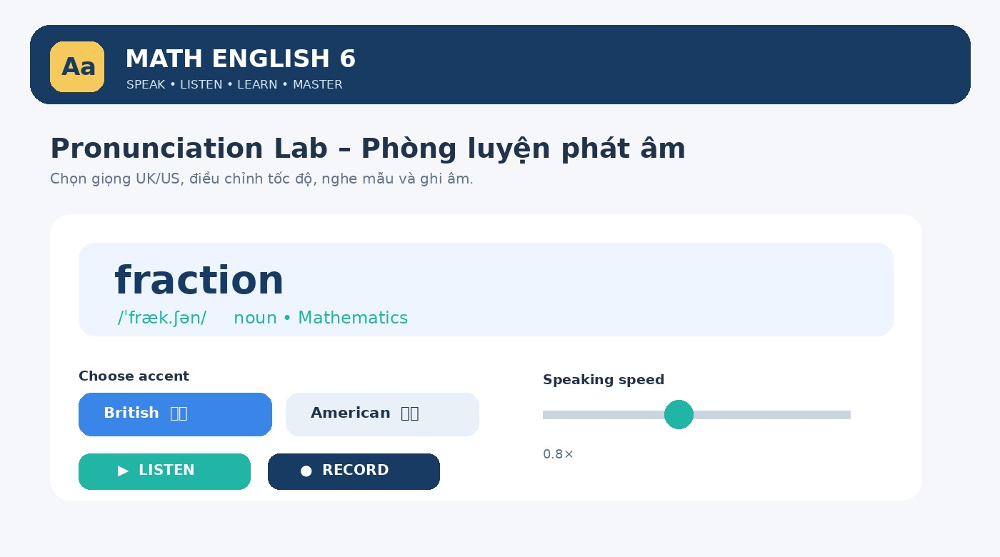
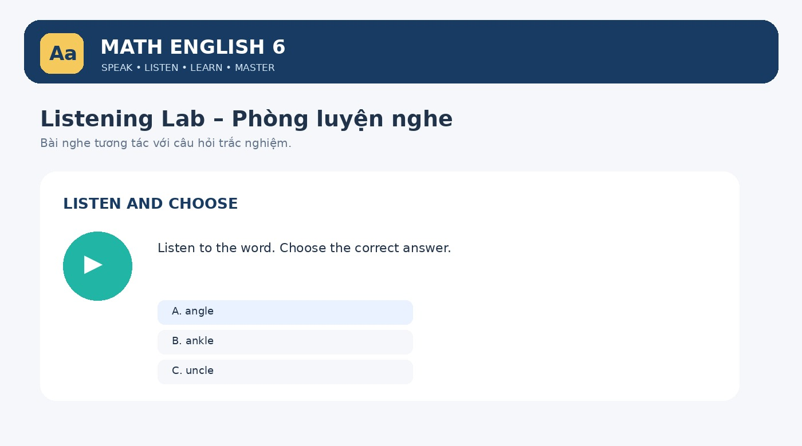
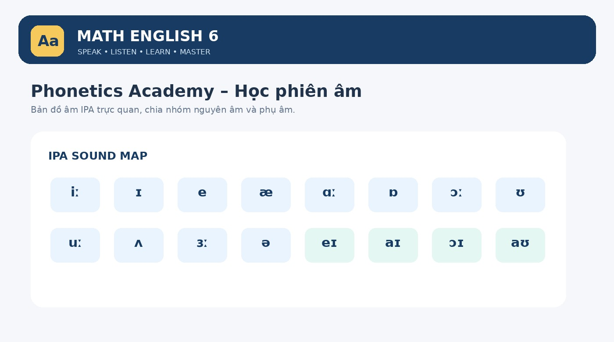
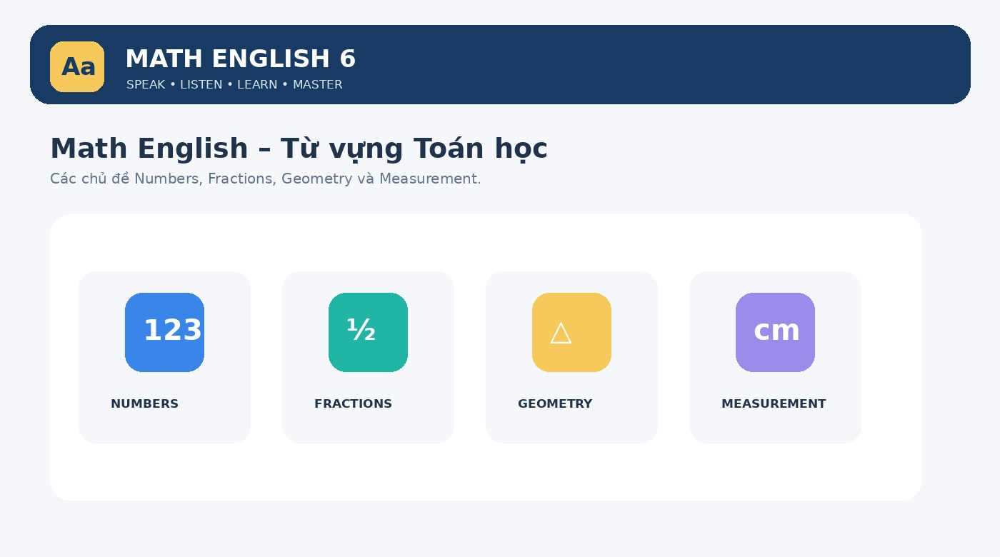

Đề xuất phát triển MATH ENGLISH 6 thành nền tảng luyện phát âm và sử dụng từ vựng tiếng Anh có tích hợp AI. Học sinh có thể học, nghe, nói, thực hành, làm bài tập và theo dõi tiến bộ; giáo viên có thể tạo nội dung, giao bài và theo dõi kết quả.
I. Tầm nhìn và mục tiêu hệ thống
1. Mục tiêu
| Nhóm | Mục tiêu |
|---|---|
| Học sinh | Tự luyện phát âm, nghe và sử dụng từ. |
| Giáo viên | Tạo danh sách từ vựng, giao bài và theo dõi kết quả. |
| AI | Phân tích phát âm, nhận diện lỗi và đưa ra hướng dẫn. |
| Hệ thống | Lưu tiến độ, điểm số và lịch sử học tập. |
2. Nguyên tắc thiết kế
- Dễ sử dụng, phù hợp học sinh 11–12 tuổi.
- Giao diện tiếng Việt kết hợp tiếng Anh.
- Mỗi thao tác quan trọng chỉ cần 1–2 lần chạm.
- Ưu tiên học qua âm thanh, hình ảnh và tương tác.
- Phản hồi tích cực, không tạo áp lực khi học sinh phát âm chưa tốt.
- Responsive trên máy tính, máy tính bảng và điện thoại.
3. Đối tượng và phân quyền
| Vai trò | Quyền sử dụng |
|---|---|
| Student | Học từ, luyện nói, làm bài tập, xem tiến bộ. |
| Teacher | Quản lý lớp, từ vựng, bài tập, kết quả. |
| Admin | Quản lý tài khoản, nội dung, cấu hình hệ thống. |
II. Cấu trúc chức năng tổng thể
Đề xuất 10 phân hệ chính, được thiết kế thống nhất và có thể phát triển theo từng giai đoạn.
01. Dashboard
Trang chủ, lời chào, từ hôm nay, bài được giao, điểm gần nhất, số từ đã học, streak và huy hiệu.
02. Dictionary
Tìm từ, IPA UK/US, định nghĩa Anh–Việt, ví dụ, từ loại, họ từ, đồng nghĩa, trái nghĩa và collocations.
03. Pronunciation Lab
Nghe mẫu, ghi âm, AI đánh giá, phản hồi theo từ/âm vị và luyện lại.
04. Listening Lab
Nghe–chọn, nghe–nối, nghe–điền, nghe–sắp xếp, minimal pairs và dictation.
05. Phonetics Academy
Bài học IPA, nguyên âm, phụ âm, âm tiết, trọng âm, ngữ điệu và khẩu hình.
06. Practice Center
Bài tập phát âm, từ vựng, nghe, tình huống giao tiếp và thử thách Toán tiếng Anh.
07. Math English
Thư viện từ Toán 6 theo chủ đề, có âm thanh, ví dụ toán học và bài tập.
08. My Progress
Từ đã học, số lần luyện, điểm trung bình, từ cần ôn và biểu đồ tiến bộ.
09. Teacher Portal
Tạo lớp, danh sách từ, giao bài, theo dõi lỗi, xuất báo cáo Excel/PDF.
10. Admin
Quản trị tài khoản, từ điển, ngân hàng câu hỏi, dịch vụ AI, quyền truy cập và chi phí.

1. Dashboard – Trang chủ
- Lời chào và tên học sinh.
- Thanh tìm kiếm từ vựng.
- Nút bắt đầu luyện phát âm.
- Từ vựng học hôm nay; bài tập được giao; điểm phát âm gần nhất.
- Số từ đã học, Learning Streak, thành tích và huy hiệu.
Nút truy cập nhanh: Learn Words – Practice Speaking – Listening – Math Vocabulary – My Progress.
2. Dictionary – Từ điển thông minh
Quy trình: nhập từ → kiểm tra chính tả → trả thông tin → nghe, xem ví dụ và lưu vào sổ từ vựng.
| Trường dữ liệu | Nội dung |
|---|---|
| Word / Part of Speech | Từ tiếng Anh / từ loại. |
| UK IPA / US IPA | Phiên âm Anh–Anh / Anh–Mỹ. |
| Syllables | Số âm tiết và cách chia âm tiết. |
| Primary / Secondary Stress | Trọng âm chính / trọng âm phụ. |
| English Definition | Giải nghĩa bằng tiếng Anh. |
| Vietnamese Meaning | Nghĩa tiếng Việt. |
| Example / Translation | Câu ví dụ và bản dịch. |
| Word Family | Họ từ. |
| Synonyms / Antonyms | Từ đồng nghĩa / trái nghĩa. |
| Collocations | Các cụm từ thường đi kèm. |
Ví dụ thẻ từ vựng: fraction
noun • Mathematics • 2 syllables • Primary stress: 1st syllable
English definition: A part of a whole.
Nghĩa tiếng Việt: Phân số; một phần của tổng thể.
Example: One half is a fraction.
Dịch: Một phần hai là một phân số.
Điều khiển: British / American; tốc độ đọc 0.5×–1.5×; nghe, lặp lại và ghi âm.

3. Pronunciation Lab – Phòng luyện phát âm bằng AI
- View Word: hiển thị từ, IPA và trọng âm.
- Listen: nghe mẫu UK hoặc US.
- Record: cấp quyền microphone và ghi âm.
- AI Analysis: nhận diện, phân tích âm vị và mức độ chính xác.
- Feedback: hiển thị điểm, âm tốt, âm cần cải thiện.
- Retry: nghe lại, luyện lại và so sánh các lần.
Thang điểm đề xuất cho câu/từ phù hợp
| Tiêu chí | Trọng số đề xuất | Ghi chú |
|---|---|---|
| Pronunciation Accuracy | 60% | Độ chính xác âm. |
| Stress | 15% | Trọng âm. |
| Fluency | 15% | Độ trôi chảy; chủ yếu phù hợp cụm từ/câu. |
| Completeness | 10% | Đọc đầy đủ. |
| Tổng | 100% | Trọng số cần hiệu chỉnh sau thử nghiệm. |
Yêu cầu kỹ thuật: xin quyền microphone; có bắt đầu/tạm dừng/kết thúc; waveform; nghe lại giọng của học sinh; phân tích từ/âm vị khi dịch vụ hỗ trợ; cảnh báo âm thanh nhỏ, nhiễu hoặc không nhận diện; lưu điểm theo lần luyện.
4. Listening Lab – Phòng luyện nghe

- Listen and Choose – Nghe và chọn từ đúng.
- Listen and Match – Nghe và nối từ với hình.
- Listen and Fill – Nghe và điền từ.
- Listen and Arrange – Nghe và sắp xếp từ thành câu.
- Minimal Pairs – Phân biệt từ có âm gần giống nhau.
- Listen and Repeat – Nghe và nhắc lại.
- Dictation – Nghe và viết lại từ/câu.
Hệ thống có nghe lại theo quy định, chỉnh tốc độ, chọn UK/US, hiển thị phụ đề sau khi hoàn thành và chấm điểm kèm giải thích.
5. Phonetics Academy – Học phiên âm

| Bài học | Nội dung |
|---|---|
| Lesson 1 | Introduction to Phonetics. |
| Lesson 2 | Vowel Sounds – Nguyên âm. |
| Lesson 3 | Consonant Sounds – Phụ âm. |
| Lesson 4 | Syllables – Âm tiết. |
| Lesson 5 | Word Stress – Trọng âm. |
| Lesson 6 | Sentence Stress & Intonation – Trọng âm câu và ngữ điệu. |
Nội dung gồm bảng IPA 44 âm theo hệ thống giảng dạy tiếng Anh Anh thường dùng; nguyên âm đơn, nguyên âm đôi, phụ âm; âm hữu thanh/vô thanh; vị trí lưỡi, môi, răng; khẩu hình; video và âm thanh mẫu; ví dụ; bài tập nhận diện và phân biệt âm.
Ví dụ trọng âm: TAble – trọng âm âm tiết 1; beGIN – trọng âm âm tiết 2; eduCAtion – có trọng âm chính và có thể phân tích trọng âm phụ.
| Ký hiệu | Ý nghĩa |
|---|---|
| /ˈ/ | Trọng âm chính. |
| /ˌ/ | Trọng âm phụ. |
| /ə/ | Âm schwa. |
| /ː/ | Ký hiệu độ dài nguyên âm trong một số hệ phiên âm. |
6. Practice Center – Trung tâm bài tập
A. Pronunciation Practice
Phân biệt âm, trọng âm, âm tiết, chọn cách phát âm đúng.
B. Vocabulary Practice
Nối từ với nghĩa, điền từ, chọn từ đúng, hoàn thành câu.
C. Listening Practice
Nghe và chọn, nghe và điền, nghe và viết.
D. Speaking Situations
Tình huống giao tiếp, hỏi đáp, mô tả hình học, giải thích bài toán.
E. Math English Challenge
Đọc từ Toán học, nghe thuật ngữ, mô tả hình, trình bày lời giải bằng tiếng Anh.
Teacher: What is a fraction?
Student: A fraction represents a part of a whole.
Teacher: What is the numerator?
Student: It is the top number in a fraction.
Học sinh nghe hội thoại, chọn đáp án, luyện phát âm từ khóa, ghi âm câu trả lời và nhận phản hồi AI.
7. Math English – Từ điển Toán học lớp 6

| Chủ đề | Ví dụ từ vựng |
|---|---|
| Numbers | Natural number, integer, digit, sum, difference. |
| Fractions | Fraction, numerator, denominator, equivalent. |
| Geometry | Triangle, rectangle, square, vertex, angle. |
| Measurement | Perimeter, area, length, width, unit. |
| Lines | Parallel, perpendicular, line segment, ray. |
| Statistics | Data, chart, frequency, average, survey. |
Mỗi chủ đề có danh sách từ, IPA, âm thanh, định nghĩa Anh–Việt, ví dụ toán học, bài nghe/nói và bài kiểm tra cuối chủ đề.
8. My Progress – Theo dõi tiến bộ
- Tổng số từ đã học và số lần luyện phát âm.
- Điểm trung bình; từ phát âm tốt; từ cần luyện thêm.
- Kết quả bài nghe và bài tập.
- Biểu đồ tiến bộ theo tuần/tháng.
- Gợi ý cá nhân hóa, ví dụ: “You should practice the /θ/ sound more.”
9. Teacher Portal – Cổng giáo viên
- Tạo lớp, thêm học sinh hoặc tạo mã tham gia.
- Tạo danh sách từ theo bài học và bài luyện phát âm.
- Giao bài theo lớp hoặc cá nhân; thiết lập thời hạn.
- Xem điểm phát âm, từ học sinh thường phát âm sai.
- Xuất báo cáo Excel/PDF; tạo bài kiểm tra trước và sau học.
10. Admin – Quản trị
- Quản lý tài khoản và vai trò.
- Quản lý thư viện từ điển, ngân hàng câu hỏi và chủ đề Toán.
- Cấu hình giọng đọc, dịch vụ AI và quyền truy cập.
- Theo dõi nhật ký hoạt động và chi phí AI.
III. Hệ thống thiết kế UI/UX – Design System
Phong cách: Modern EdTech – Playful Academic – Clean & Friendly. Hiện đại, vui tươi, mang tính giáo dục, không quá trẻ con và không rối mắt.
1. Color Palette – Bảng màu thương hiệu
| Tên màu | Mã màu | Vai trò |
|---|---|---|
| Primary Navy | #173B63 | Màu chủ đạo. |
| Bright Blue | #3985E8 | Nút hành động. |
| Learning Teal | #21B5A5 | Học tập, tiến bộ. |
| Sunny Yellow | #F5C95B | Điểm nhấn. |
| Soft Lavender | #E9E5FF | Khu vực phụ. |
| Soft Background | #F5F7FB | Nền giao diện. |
| Success Green | #239B70 | Hoàn thành. |
| Coral | #F18A72 | Cảnh báo nhẹ. |
Nguyên tắc: khoảng 60% nền sáng, 30% màu xanh chủ đạo, 10% màu nhấn; tránh nhiều màu bão hòa trên cùng màn hình; bảo đảm tương phản chữ/nền.
2. Typography – Hệ thống chữ
| Thành phần | Đề xuất |
|---|---|
| Font giao diện | Inter. |
| Font tiêu đề | Poppins. |
| Font IPA | Noto Sans hoặc font tương thích Unicode IPA. |
| Font số liệu | Inter, chữ số rõ ràng. |
| H1 | 32 px. |
| H2 | 26 px. |
| H3 | 20 px. |
| H4 | 16 px. |
| Body | 15–16 px. |
| Caption | 12–13 px. |
| IPA | 22–28 px. |
| Từ vựng chính | 32–40 px. |
- Không quá 2 họ font chính; tối đa 3 cấp độ tiêu đề trong một màn hình.
- Line-height nội dung khoảng 1.5; tránh font quá mảnh.
- Ưu tiên căn trái; IPA nổi bật và không lỗi ký tự.
- Nút có nhãn rõ ràng, không chỉ dùng icon.
- Không dùng chữ in hoa cho cả đoạn văn.
3. Spacing và bố cục
| Thành phần | Quy chuẩn |
|---|---|
| Spacing | Bội số 4 px. |
| Khoảng cách giữa khối | 24–32 px. |
| Padding card | 20–24 px. |
| Border radius card | 14–18 px. |
| Nút chính | Cao 48–52 px. |
| Icon | 20–24 px. |
| Vùng chạm mobile | Tối thiểu 44 × 44 px. |
| Chiều rộng nội dung | Tối đa khoảng 1200 px. |
4. Điều hướng
Desktop: menu bên trái gồm Home, Dictionary, Pronunciation Lab, Listening Lab, Phonetics Academy, Practice Center, Math English, My Progress và Teacher Portal. Mobile: thanh điều hướng dưới gồm Home, Learn, Practice, Progress, Profile; chức năng khác nằm trong menu mở rộng.
IV. Kiến trúc công nghệ và AI
Đề xuất phát triển dạng Web App kết hợp PWA (Progressive Web App). Học sinh truy cập bằng trình duyệt và có thể cài biểu tượng lên màn hình điện thoại mà chưa cần phát triển riêng ứng dụng Android/iOS.
1. Technology Stack
Giao diện, trang học tập, tương tác, PWA
Design System, component và bố cục
Tài khoản, lớp học, từ điển, bài tập, kết quả
Text-to-Speech, nhận diện, đánh giá phát âm
IPA, định nghĩa, ví dụ, nghĩa tiếng Việt, Math English
2. Công nghệ phát âm
Đề xuất đánh giá Microsoft Azure AI Speech. Các chỉ số có thể bao gồm Accuracy Score, Fluency Score, Completeness Score, Prosody Score và phản hồi cấp từ/âm vị tùy chế độ, ngôn ngữ và cấu hình dịch vụ.
Locale giọng đọc: en-GB (Anh–Anh) và en-US (Anh–Mỹ). Điều chỉnh tốc độ qua SSML; cho phép nghe lặp và điều chỉnh cao độ nếu phù hợp.
3. Quy trình chấm điểm
4. Nguồn dữ liệu từ điển
| Nguồn | Vai trò |
|---|---|
| Dictionary API có bản quyền | IPA, định nghĩa và ví dụ. |
| Cơ sở dữ liệu nội bộ | Nghĩa tiếng Việt, thuật ngữ Toán 6. |
| AI hỗ trợ biên soạn | Tạo ví dụ, bài tập, tình huống và phản hồi; nội dung phải được kiểm duyệt. |
V. Thiết kế cơ sở dữ liệu
Không lưu toàn bộ dữ liệu trong một trang hoặc một file JavaScript. Đề xuất các bảng dữ liệu:
| Bảng | Chức năng |
|---|---|
| users | Tài khoản người dùng. |
| profiles | Hồ sơ học sinh, giáo viên. |
| classes | Lớp học. |
| class_members | Thành viên lớp. |
| vocabulary | Danh sách từ vựng. |
| pronunciations | Phiên âm Anh–Anh, Anh–Mỹ. |
| definitions | Định nghĩa Anh–Việt. |
| examples | Câu ví dụ. |
| audio_assets | Âm thanh mẫu. |
| phonetics | Dữ liệu IPA, âm vị. |
| exercises / questions | Ngân hàng bài tập và câu hỏi. |
| assignments | Bài tập được giao. |
| submissions | Bài làm. |
| pronunciation_results | Kết quả luyện nói. |
| learning_progress | Tiến độ học tập. |
| achievements | Huy hiệu. |
| learning_sessions | Lịch sử học tập. |
Ví dụ cấu trúc dữ liệu từ fraction
{
"word": "fraction",
"part_of_speech": "noun",
"topic": "Fractions",
"level": "A2",
"uk_ipa": "/ˈfræk.ʃən/",
"us_ipa": "/ˈfræk.ʃən/",
"syllables": ["frac", "tion"],
"primary_stress": 1,
"english_definition": "A part of a whole.",
"vietnamese_meaning": "Phân số; một phần của tổng thể.",
"examples": [{
"sentence": "One half is a fraction.",
"translation": "Một phần hai là một phân số."
}],
"math_topic": "Fractions",
"status": "published"
}
Đây là dữ liệu minh họa; phiên âm, định nghĩa và ví dụ thực tế cần được kiểm chứng theo nguồn từ điển đã chọn.
Quy tắc bảo mật
- Không để lộ API Key trên trình duyệt.
- Mọi yêu cầu chấm điểm đi qua backend.
- Phân quyền học sinh, giáo viên và quản trị viên.
- Bật Row Level Security (RLS) cho Supabase.
- Không công khai bản ghi giọng nói của học sinh.
- Chỉ lưu âm thanh khi cần thiết và có sự cho phép phù hợp.
- Có chính sách xóa dữ liệu, thời hạn lưu trữ và sao lưu.
- Tuân thủ quy định bảo vệ dữ liệu cá nhân áp dụng tại Việt Nam.
VI. Yêu cầu phi chức năng
| Tiêu chí | Yêu cầu |
|---|---|
| Responsive | Điện thoại, tablet, desktop. |
| Performance | Tải trang nhanh, tối ưu âm thanh. |
| Usability | Học sinh lớp 6 dễ sử dụng. |
| Accessibility | Hỗ trợ bàn phím, tương phản, phụ đề. |
| Security | Phân quyền, bảo vệ dữ liệu. |
| Scalability | Mở rộng được số lớp và người dùng. |
| Reliability | Có thông báo lỗi và thử lại. |
| Compatibility | Hỗ trợ trình duyệt phổ biến. |
| Backup | Sao lưu cơ sở dữ liệu. |
| Monitoring | Theo dõi lỗi và chi phí AI. |
Khi microphone hoặc dịch vụ AI không hoạt động, học sinh vẫn có thể học từ vựng, nghe âm thanh đã lưu và làm bài tập không yêu cầu ghi âm.
VII. Lộ trình phát triển ứng dụng
Giai đoạn 1 – MVP: Từ điển và luyện phát âm
- Nhập từ và tìm kiếm.
- Phiên âm UK/US; định nghĩa Anh–Việt; ví dụ.
- Nghe mẫu, chỉnh tốc độ, nghe lặp.
- Ghi âm, chấm điểm AI, xem kết quả.
Giai đoạn 2 – Học phiên âm và luyện tập
- Phonetics Academy; bài tập nhận diện âm và trọng âm.
- Listening Lab; Minimal Pairs; sổ tay từ vựng.
Giai đoạn 3 – Math English và AI Learning
- Thư viện Toán 6; bài tập tình huống; hội thoại Toán.
- AI tạo bài tập và phản hồi cá nhân hóa.
Giai đoạn 4 – Teacher Portal và Analytics
- Quản lý lớp, giao bài, theo dõi học sinh.
- Báo cáo Excel/PDF; thống kê lỗi phát âm phổ biến.
Tiêu chí nghiệm thu MVP
- Nhập từ hợp lệ và trả về đúng dữ liệu.
- Có IPA UK/US, định nghĩa Anh–Việt, ví dụ và bản dịch.
- Nghe được âm thanh mẫu; chỉnh tốc độ; nghe lặp.
- Xin quyền microphone đúng cách; ghi âm và gửi dữ liệu thành công.
- Trả về điểm phát âm và phản hồi; hiển thị lỗi âm vị khi dịch vụ hỗ trợ.
- Lưu kết quả luyện tập.
- Hoạt động trên điện thoại và máy tính.
- Không để lộ khóa dịch vụ AI.
VIII. Tính năng nâng cao nên bổ sung
| Tính năng | Giá trị sư phạm |
|---|---|
| Personal Vocabulary Book | Mỗi học sinh có sổ từ vựng riêng. |
| Spaced Repetition | Nhắc lại từ theo chu kỳ. |
| Word of the Day | Mỗi ngày học một từ mới. |
| Pronunciation Challenge | Thử thách phát âm theo chủ đề. |
| Compare My Voice | So sánh bản ghi học sinh với âm mẫu. |
| AI Speaking Partner | AI đóng vai người đối thoại tiếng Anh. |
| Weekly Learning Report | Báo cáo kết quả hằng tuần. |
Pronunciation Error Bank – Ngân hàng lỗi phát âm
Thống kê lỗi phổ biến trong lớp, ví dụ nhầm /θ/ và /t/, /ʃ/ và /s/, /ɪ/ và /iː/, hoặc đặt sai trọng âm. Giáo viên sử dụng dữ liệu này để thiết kế hoạt động bổ trợ. Không gắn nhãn tiêu cực cho học sinh; tập trung vào âm cần luyện.
IX. Tiêu chuẩn bàn giao sản phẩm
- Web App hoạt động thực tế.
- Giao diện Desktop, Tablet và Mobile.
- Tài khoản học sinh, giáo viên và quản trị viên.
- Cơ sở dữ liệu từ vựng.
- Kết nối dịch vụ AI phát âm.
- Hệ thống âm thanh UK/US.
- Ngân hàng bài tập.
- Hệ thống lưu điểm và tiến độ.
- Trang quản lý giáo viên.
- Tài liệu hướng dẫn sử dụng và quản trị.
X. Định hướng triển khai thực tế
1. Công cụ có thể lựa chọn
| Công cụ | Vai trò |
|---|---|
| Lovable | Hỗ trợ tạo giao diện và ứng dụng từ mô tả. |
| Bolt.new | Phát triển ứng dụng web với AI. |
| Supabase | Cơ sở dữ liệu, xác thực và backend. |
| Microsoft Azure AI Speech | Phát âm và đánh giá giọng nói. |
Không nên yêu cầu AI tạo toàn bộ ứng dụng chỉ bằng một câu lệnh. Nên phát triển từng module, kiểm thử rồi tích hợp.
2. Thứ tự xây dựng tối ưu
- Hoàn thiện Design System và giao diện tổng thể.
- Xây dựng từ điển thông minh.
- Kết nối phát âm UK/US.
- Kết nối microphone và Pronunciation Assessment.
- Xây dựng Phonetics Academy.
- Xây dựng Listening Lab và Practice Center.
- Tạo thư viện Math English 6.
- Xây dựng Teacher Portal.
XI. Cấu hình dự án cần chốt
| Quyết định | Phương án |
|---|---|
| Nền tảng | Web App; PWA; hoặc ứng dụng di động Android/iOS. |
| Đối tượng | Chỉ học sinh; học sinh và giáo viên; hoặc nhiều trường học. |
| Phương pháp xây dựng | AI hạn chế lập trình thủ công; mã nguồn tùy chỉnh sâu; hoặc kết hợp. |
Thông điệp thương hiệu
Learn English. Speak Mathematics. Build Confidence.